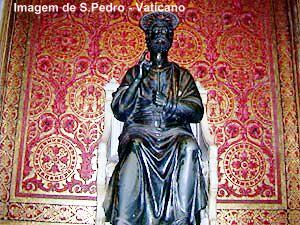
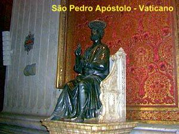
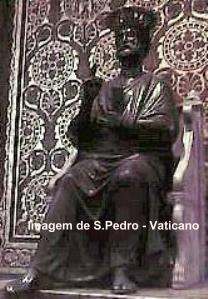
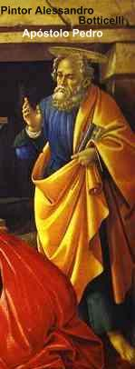
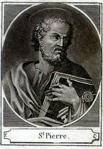
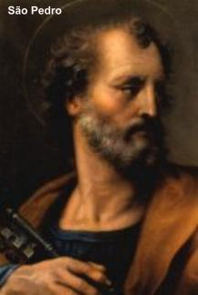

FESTA DE SÃO
PEDRO
Desde o final do terceiro século
ou inÃcio do quarto século, era celebrada uma
Festa
no mesmo dia, em honra a São Pedro e São Paulo, embora a data fosse diferente
no Oriente e no Ocidente. Na lista das Festas dos mártires no “Chronograph de Philocalusâ€,
consta a referida celebração no dia 29 junho. Na mencionada data, desde o ano 258
era comemorada a Festa dos dois Apóstolos Pedro e Paulo, na Via Appia “ad Catacumbas†(próximo a
Igreja de São Sebastião fora do muro que cercava Roma). Com a construção da
BasÃlica de São Pedro no Vaticano e a BasÃlica de São Paulo na Via Ostiensi fora
do muro, os restos mortais dos Apóstolos foram transladados para as
respectivas BasÃlicas.

São Pedro levou para Roma a Palavra do
SENHOR e lá rezou e plantou a fé, empenhando-se dedicadamente no ensino da
doutrina cristã, convertendo e encaminhando muitos corações ao Reino de DEUS,
estabelecendo sua Cátedra Episcopal, cujos sucessores, são considerados bispos de
Roma em todas as épocas. São Cipriano chama Roma de Cátedra de São Pedro, da
mesma forma que São Theodoro chama a cidade eterna de Trono do Apóstolo,
porque São Pedro fundou a Igreja de Roma, lá trabalhou intensamente divulgando
o ensinamento Divino e lá foi martirizado sob o Imperador Nero. Em consequência
tornou-se um costume antigo, conforme informam o Cardeal Baronius e o Cardeal
Thomassin, fazer a consagração anual de bispos, para manter a hierarquia eclesiástica,
sempre que possÃvel no dia 18 de Janeiro, ou seja, os sucessores
que irão ocupar a cátedra episcopal de São Pedro serem consagrados na data
em que a Igreja comemora a Cátedra de São Pedro.
Uma terceira festividade relacionada
com o Apóstolo, acontece no dia 1º de Agosto, que é a Festa das Correntes de
São Pedro. Esta Festa originou na dedicação da Igreja construÃda na Colina
Esquilina em homenagem ao Apóstolo, 
que ocorreu no dia 1º de
Agosto. Nesta Igreja, ainda de pé (Igreja de São Pedro em Vincoli), são veneradas
os restos das correntes que aprisionaram o Apóstolo, sendo consideradas relÃquias
preciosas e pertencem ao acervo do Vaticano.
A memória de Pedro e Paulo também está
associada a dois lugares da Roma Antiga: a Via Sacra, nas proximidades do Foro
Romano, onde se afirma que um famoso mágico Simão foi atirado ao solo, diante
da oração forte de Pedro, quando ele tentava intimidar o Apóstolo; e a prisão Tullianum,
ou Cárcere Mamertinus onde supostamente Pedro e Paulo estiveram presos até a
execução. Nestes lugares, foram construÃdas Igrejas em honra dos Apóstolos. Quanto
a Prisão Mamertinus é conservada em quase a sua forma original do tempo romano.
Porém, é possÃvel que na realidade, Pedro e Paulo tenham sido confinados na prisão
principal de Roma, no forte do Capitólio e não em Mamertinus. Contudo o cárcere
Mamertinus é uma lembrança histórica que restou dos acontecimentos daquela
época.
REPRESENTAÇÕES
DE SÃO PEDRO
A mais antiga representação existente é um
Medalhão de bronze que data do fim
do século II, mostrando as
cabeças dos dois Apóstolos, Pedro e Paulo e é preservado no Museu Cristão da
Biblioteca do Vaticano. Pedro tem a mandÃbula saliente e não era calvo, tem
cabelo espesso, ondulado e barba. As caracterÃsticas são tão individuais e nÃtidas,
como se fosse um retrato. Este mesmo formato de Pedro é encontrado também em
duas representações na câmara da Catacumba de Pedro e Marcellinus, datando da
segunda metade do terceiro século (Wilpert, "Die Malerein der Katakomben
Rom", ilustração 94 e 96). Nas pinturas das catacumbas, São Pedro e São
Paulo aparecem frequentemente como intercessores e defensores do morto nas
cenas do Último Julgamento (Wilpert, 390 e seguintes). Nas numerosas representações
de CRISTO no meio dos Apóstolos nas pinturas das catacumbas e esculpidas nos
sarcófagos, Pedro e Paulo ocupam os lugares de honra, à direita do Salvador,
um após o outro. Nos mosaicos das basÃlicas romanas, que datam do quarto ao
nono século, CRISTO aparece como a figura central, estando São Pedro e São
Paulo um à direita e o outro à esquerda, e além deles, os santos que são
venerados naquela Igreja em particular. Em sarcófagos e em memoriais, aparecem
cenas da vida de São Pedro: andando sobre as águas no Lago Genesaré quando
CRISTO o chamou; a profecia da negação de Pedro; JESUS lavando os pés do Apóstolo;
Pedro ressuscitando Tabita; Pedro na prisão e o 
Apóstolo sendo levado para
o lugar da execução. Nas apresentações do Novo Testamento, o Apostolo é
considerado, guia espiritual dos fieis de DEUS.
Entre o quarto e o sexto século,
encontramos com frequência vários tipos de monumentos apresentando a entrega
da Lei a Pedro. CRISTO dá a São Pedro um rolo de papel aberto ou enrolado, no
qual está a inscrição Lex Domini
(Lei do SENHOR) ou
Dominus legem dat (o SENHOR dá a lei). No mausoléu de
Constantina em Roma (Santa Costanza na Via Nomentana) esta cena da entrega
da Lei é representada por uma flâmula. Em esculturas do quarto século Pedro
frequentemente leva um cajado em sua mão direita. Nos monumentos do quinto
século, ele leva uma cruz nos ombros com uma haste comprida, uma espécie de
cetro indicando a sua função de pastor. A partir do sexto século, é que surge a
representação das Chaves (normalmente duas, mas às vezes até três chaves),
as quais se tornaram o atributo principal de Pedro em todas as imagens, daquela
época até hoje. Até as renomadas e veneradas estátuas de bronze de São Pedro,
possuem as Chaves; sem dúvida, esta é a melhor representação do Apóstolo, e
data do último perÃodo da Antiguidade Cristã. (Grisar, "Analecta romana",
I, Rome, 1899, 627 e seguintes).
1 - ORAÇÃO
São Pedro Apóstolo, vós que nos ensinastes a
reconhecer a Divindade de JESUS quando proclamastes: ‘‘TU és o Messias, o FILHO de DEUS Vivo’’. Dai-nos
um verdadeiro espÃrito de Fé e uma aceitação total da Revelação. Ensinai-nos a amar e
a viver numa grande caridade. Protegei nossas famÃlias, santificai nossas almas, dai-nos
aquela graça que precisamos em cada momento de nossa vida. Amém.
2 – ORAÇÃO
Ó glorioso São Pedro, PrÃncipe
dos Apóstolos, a quem o SENHOR JESUS
escolheu para ser o fundamento
da Igreja, entregou as chaves do Reino dos Céus e constituiu Pastor universal dos fiéis,
queremos ser sempre vossos súditos e filhos.
Confiantes na Palavra do SENHOR, que vos
concedeu o encargo de confirmar os irmãos na fé, nos conceda a graça de, diante da
diversidade das opiniões dos homens, saber professar com firmeza a nossa fé em
CRISTO, FILHO de DEUS, e permanecer naquele fervoroso amor a JESUS,
que por três vezes proclamastes após a ressurreição.
Fazei que sejamos fiéis aos ensinamentos do
evangelho, a fim de permanecermos unidos no rebanho do SENHOR, sob a vossa
guarda, e no amor ao Santo Padre, o Papa, vosso legÃtimo sucessor, a fim de
que, após o tempo desta vida, possamos nos unir para sempre à Igreja
triunfante no céu. Amém.

 Próxima Página
Próxima Página
Página Anterior
Retorna ao Ãndice